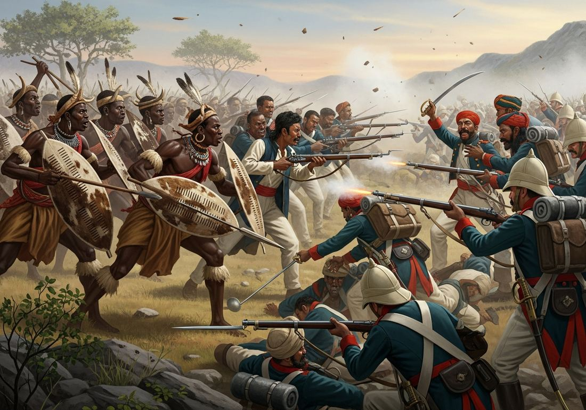

6.3 Indigenous Responses to State Expansion from 1750 to 1900
- LO-A: Direct armed resistance, fighting back with force: Many indigenous peoples chose direct military resistance to colonial conquest. Key examples include the 1857 Rebellion in India (sepoys and civilians against East India Company rule), Samory Touré’s Wassoulou Empire resisting French expansion in West Africa, and the Yaa Asantewaa War (1900) in which the Asante queen mother led Gold Coast resistance to British demands. All ultimately failed against industrial military superiority. Creating new states, building political structures to resist: Some communities responded by constructing new, stronger political entities. The Sokoto Caliphate (founded 1804 in present-day Nigeria) unified Hausa city-states under Islamic governance. The Zulu Kingdom under Shaka expanded to become a major regional power that held off British forces at Isandlwana (1879), one of Britain’s worst military defeats. Balkan peoples formed new nation-states as the Ottoman Empire weakened. Religious and spiritual resistance movements, faith as resistance: When military options were exhausted, communities often turned to spiritual responses. The Ghost Dance movement (1889–90) among Plains Indians promised that performing the ritual would make settlers disappear and restore indigenous life; it ended at Wounded Knee (1890). The Xhosa Cattle-Killing Movement (1856–57) in southern Africa was a prophetic movement that ultimately destroyed the Xhosa’s capacity for resistance. The Mahdist War in Sudan (1881–98) combined religious revival with military resistance to Egyptian-British rule. Why most resistance failed, the military technology gap: Industrial weapons, repeating rifles, artillery, Maxim guns, gunboats, created a gap between colonizers and colonized that no amount of courage could bridge. The Maxim gun (1884), the world’s first recoil-operated machine gun, could fire 500 rounds per minute. Hilaire Belloc’s satirical lines captured the asymmetry: “Whatever happens, we have got / The Maxim Gun, and they have not.”.
Try each question before revealing the answer.
1. Why might some communities respond to colonial pressure by building stronger, larger political entities (like the Sokoto Caliphate or Zulu Kingdom) rather than fighting immediately?
2. Why might spiritual or religious resistance movements emerge when military resistance has been defeated or is clearly impossible?
3. The 1857 Rebellion in India is sometimes called a “Sepoy Mutiny” and sometimes the “First War of Indian Independence.” What does the naming dispute reveal?
4. The Zulu Kingdom defeated a British army at Isandlwana in 1879. Why did this victory not ultimately prevent British conquest of Zululand?
5. Why might nationalism, the belief in a distinct national identity, be a tool of both imperialism and anti-imperialism?
- Explain how and why internal and external factors influenced the process of state building, including anticolonial resistance, from 1750 to 1900
Tap a term for its definition.
-
Definition: Organized opposition by indigenous or colonized peoples to foreign imperial rule, ranging from armed rebellion to cultural preservation to political mobilization. Significance: A defining feature of the imperial age; demonstrates that colonized peoples were not passive victims but active agents who contested foreign rule in multiple ways.
-
Definition: A major uprising against British East India Company rule in India, involving both sepoys (Indian soldiers) and civilians. Also called the First War of Indian Independence. Significance: Reflected deep resentment of Company rule; led to the end of Company rule and the beginning of the British Raj; a landmark in Indian nationalist memory.
-
Definition: West African Muslim ruler who built the Wassoulou Empire and led prolonged military resistance to French colonial expansion in present-day Guinea and Mali from the 1860s to 1898. Significance: One of the most sustained examples of African military resistance to European colonization; his guerrilla tactics delayed French conquest for decades before his capture.
-
Definition: An uprising in the Asante kingdom (present-day Ghana) led by Queen Mother Yaa Asantewaa against British demands to surrender the Golden Stool, the sacred symbol of Asante sovereignty. Significance: An example of direct resistance that combined political, cultural, and military elements; the British ultimately prevailed, annexing Asante in 1902.
-
Definition: An Islamic state founded by Usman dan Fodio in 1804 in present-day Nigeria, unifying Hausa city-states under Islamic governance through the Fulani Jihad. Significance: Example of a new state created on the periphery as a response to political instability; one of the largest states in 19th-century Africa before British conquest in 1903.
-
Definition: A spiritual movement among Plains Indian peoples (1889–90) based on the teachings of Wovoka, a Paiute prophet, who taught that performing the Ghost Dance would restore indigenous life and make European settlers disappear. Significance: Represents religious/spiritual resistance to colonial conquest; ended at the massacre at Wounded Knee (1890), when U.S. soldiers killed approximately 300 Lakota Sioux.
-
Definition: A religious-military uprising in Sudan led by Muhammad Ahmad (the Mahdi), who declared himself the Expected Mahdi (guided one) and led forces that defeated Egyptian-British forces and held Sudan independently until the Battle of Omdurman (1898). Significance: One of the most successful examples of armed anticolonial resistance; combined Islamic revival with nationalism; eventually suppressed by Kitchener’s British army.
-
Definition: José Gabriel Condorcanqui, who took the name Túpac Amaru II and led the largest indigenous uprising in colonial Latin American history (1780–81) against Spanish rule in Peru. Significance: Mobilized indigenous and mestizo communities against colonial taxation and forced labor; executed by Spanish authorities; remains a powerful symbol of indigenous resistance in Latin America.
🎯 The Spectrum of Resistance: More Than Just Armed Revolt
When colonial powers expanded, indigenous peoples did not simply submit. They responded, in dozens of different ways, at different scales, with different strategies. The CED organizes these responses into three overlapping categories: direct armed resistance, creating new states on the periphery, and rebellions influenced by religious or spiritual ideas. Understanding all three is essential for the AP exam.
Before diving in, it’s worth thinking about the range of responses that existed beyond these three categories: diplomatic negotiation (signing treaties, seeking alliances with rival European powers), cultural preservation (hiding or protecting sacred objects, continuing banned practices), economic adaptation (shifting trade relationships to maintain some autonomy), and political accommodation (working within colonial structures to preserve community interests). The three CED categories capture the most dramatic responses, but the full picture is more complex.
⚔️ Direct Armed Resistance: Fighting Back
The most dramatic response to colonial expansion was armed resistance. Across Africa, Asia, and the Americas, indigenous peoples fought against colonial conquest. Most ultimately failed, the combination of industrial weapons, logistical capacity, and the ability to reinforce losses gave colonial powers overwhelming long-term advantages. But the resistance was real, often prolonged, and sometimes spectacularly successful in the short term.
In Latin America, Túpac Amaru II (José Gabriel Condorcanqui) led the largest indigenous uprising in colonial history in 1780–81. Mobilizing tens of thousands of indigenous and mestizo people against Spanish taxation and forced labor (the mita system), his forces briefly threatened to overturn Spanish rule in Peru. The Spanish captured and executed him in 1781, his body publicly dismembered to terrorize potential rebels, but his name became a symbol of resistance for centuries afterward.
In India, the 1857 Rebellion spread far beyond its origins in sepoy (soldier) resentment of East India Company policies. When soldiers refused to use new cartridges rumored to be greased with pig and cow fat (offensive to both Muslims and Hindus), the uprising expanded into a general rebellion involving peasants, landlords, and princes who had accumulated years of grievances. The rebels captured Delhi and proclaimed the restoration of Mughal rule. British forces reconquered Delhi after a prolonged siege, executed thousands, and used the rebellion to justify ending Company rule entirely.
In West Africa, Samory Touré built the Wassoulou Empire and used sophisticated guerrilla tactics, scorched earth strategy, mobile warfare, and even his own arms manufacturing, to resist French expansion for nearly three decades before his capture in 1898. In the Gold Coast (present-day Ghana), the Asante Queen Mother Yaa Asantewaa launched the Yaa Asantewaa War in 1900 after the British governor demanded the Asante surrender the Golden Stool, the sacred symbol of Asante sovereignty. “If you, the chiefs of Asante,” she reportedly declared, “will not go forward, then we will. We, the women, will. I shall call upon my fellow women.”

Indigenous resistance to European colonial expansion took many forms, from large-scale military campaigns to guerrilla warfare to spiritual movements. Most ultimately failed against industrialized military power (Google Gemini, 2025), commercially licensed.
🏛️ Creating New States: Building Power to Resist
The CED identifies a second pattern of response: indigenous communities created new states on the periphery of colonial expansion (KC-5.2.II.C). Rather than simply fighting off individual colonial advances, these communities built larger, more powerful political entities specifically to resist domination.
The Sokoto Caliphate, founded in 1804 by the Islamic scholar Usman dan Fodio in present-day Nigeria, unified dozens of fragmented Hausa city-states through the Fulani Jihad. By mid-century it was one of the largest states in Africa, with a population of perhaps 10 million and a sophisticated administrative structure. The Caliphate resisted European encroachment for decades before British conquest in 1903. Its survival into the 20th century demonstrated how political consolidation could significantly delay colonial conquest.
In southern Africa, the Zulu Kingdom under Shaka (r. 1816–28) expanded rapidly by incorporating neighboring peoples through a combination of conquest and alliance, creating a military force organized around age-grade regiments (amabutho). The Zulus defeated the British at Isandlwana (1879) before ultimately losing at Ulundi later that year.
The CED also notes Balkan nation-states as examples. Greece (independence 1821), Serbia, Bulgaria, Romania, and others broke away from the weakening Ottoman Empire, demonstrating how nationalism enabled state formation in response to imperial decline. The Cherokee Nation in North America is another example: the Cherokee adopted a written constitution, established schools and newspapers, and attempted to build a recognizable “civilized” nation-state in hopes that demonstrating “civilized” status would protect them from removal. It did not, the Trail of Tears (1838) removed them anyway.
🕊️ Religious and Spiritual Resistance: Faith Against Empire
When military options were exhausted or unavailable, communities often turned to religious and spiritual frameworks as forms of resistance. These movements combined genuine spiritual belief with political resistance to colonial rule, and the CED identifies them as a distinct category (KC-5.3.III.E): discontent produced rebellions influenced by religious ideas.
The Ghost Dance movement spread rapidly among Plains Indian peoples in 1889–90, inspired by the teachings of Wovoka, a Paiute prophet who had a vision during a solar eclipse. He taught that performing the Ghost Dance would cause European settlers to disappear, the land to regenerate, and the buffalo to return. The movement spread because it offered hope to communities that had been defeated militarily, stripped of their land, and confined to reservations. U.S. authorities, alarmed by the movement’s spread, attempted to arrest Sitting Bull, who was killed in the confrontation. The crisis culminated in the massacre at Wounded Knee (December 29, 1890), where U.S. soldiers killed approximately 300 Lakota Sioux, men, women, and children.
In southern Africa, the Xhosa Cattle-Killing Movement (1856–57) arose after a young woman named Nongqawuse received a prophecy: if the Xhosa killed all their cattle and destroyed their crops, the ancestors would rise, the Europeans would be driven into the sea, and the land would be restored. Desperate after years of warfare and cattle disease, thousands of Xhosa followed the prophecy. The result was catastrophic: without cattle or crops, Xhosa communities starved. Approximately 40,000 people died, and the Xhosa became dependent on colonial labor as their capacity for resistance collapsed. Well-intentioned religious belief, under conditions of extreme stress and despair, produced a self-defeating outcome.
In Sudan, the Mahdist War (1881–98) combined Islamic revival with anti-colonial resistance. Muhammad Ahmad declared himself the Mahdi (the “Expected One” in Islamic eschatology) and led a movement that defeated Egyptian-British forces, killed the famous British General Gordon at Khartoum (1885), and held Sudan independently for more than a decade. The Mahdist state was eventually destroyed at the Battle of Omdurman (1898), where Kitchener’s British forces, equipped with Maxim guns, killed over 11,000 Mahdist soldiers while suffering only 48 British deaths.
These videos will help you review Indigenous Responses to State Expansion from 1750 to 1900 and solidify key concepts before your exam.
- Direct armed resistance to colonial conquest
- The creation of a new state on the periphery of colonial expansion
- Religious or spiritual resistance inspired by prophetic vision
- Political accommodation by working within colonial governmental structures
- Direct armed resistance modeled on European military organization
- A religious resistance movement that rejected all political organization in favor of spiritual renewal
- A new state created on the periphery that unified fragmented communities to resist colonial pressure
- An accommodation strategy that sought to negotiate a protected status within European colonial law
- U.S. government policies that funded indigenous religious revival movements as a form of cultural reconciliation
- Plains Indian peoples had traditionally embraced prophetic movements as the primary form of political organization
- The Ghost Dance was originally a European Christian movement adapted by indigenous peoples
- The movement offered hope to communities for whom conventional political and military resistance had been exhausted or defeated
- Indigenous accommodation strategies were always more effective than direct military resistance
- Colonial expansion was driven by racial and economic interests that indigenous political adaptation could not overcome
- The U.S. government consistently honored treaty obligations with indigenous nations when they complied with American cultural expectations
- The civilizing mission ideology was consistently applied to protect indigenous peoples who adopted European practices
- African military forces lacked the organizational discipline needed to resist European armies effectively
- Religious motivation was insufficient to produce effective military strategy
- The industrial military-technology gap between colonial and colonized societies was the decisive factor limiting the effectiveness of armed resistance
- British imperial expansion in Africa was primarily driven by military adventurism rather than economic or ideological goals
Answer parts A, B, and C. Each requires a separate short response. Do not write a full essay.
Part A
Briefly describe ONE specific example of direct armed resistance to colonial expansion from 1750 to 1900, and explain why it ultimately failed.
Part B
Briefly explain ONE way the Ghost Dance movement or the Xhosa Cattle-Killing Movement represents a form of resistance to colonial expansion.
Part C
Briefly explain ONE way a new state created in the 19th century (such as the Sokoto Caliphate or Zulu Kingdom) served as a form of resistance to colonial expansion.
Write a full essay with a thesis, contextualization, evidence, and historical reasoning. Use causation or argumentation as your primary skill. A strong response will acknowledge both the genuine power of resistance and the structural factors that ultimately limited its effectiveness.